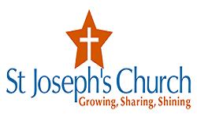
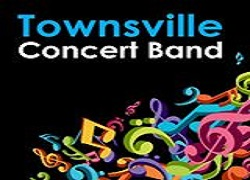

Latest Bullentins

St Josephs Mass on the strand
Our Parish Priest, Fr Mick Peters, I'm helping by organising an event format, where I invite our members to bring a plate for a buffet and I provide music, or friends who can sing or perform. Now that we are achieving some success, we need more people who can sing or play music. I'm open to any kind of singing or performing so long as it is not too controversial.
Time: Starts at 6pm and finishes 6:50pm.
If interested: please call Merle Trembath 0418882633
If interested: please call Merle Trembath 0418882633

TCB LOGO CALL OUT FOR MUSOS
Calling all Musos, entertainers, performers. We are looking to book performers/musicians/entertainers for a family friendly festival at the Ingham Tyto Wetlands on the 23rd of May. This inaugural annual event is a family fun day in the parklands and we are looking for appropriate acts. We are looking for a wide variety of bands and entertainers from our local and surrounding areas. Artists will need to be insured for public liability.
Deadline for initial submissions 29 March 2015
If interested: email Emile Griffiths - mutec.audio@gmail.com
If interested: email Emile Griffiths - mutec.audio@gmail.com